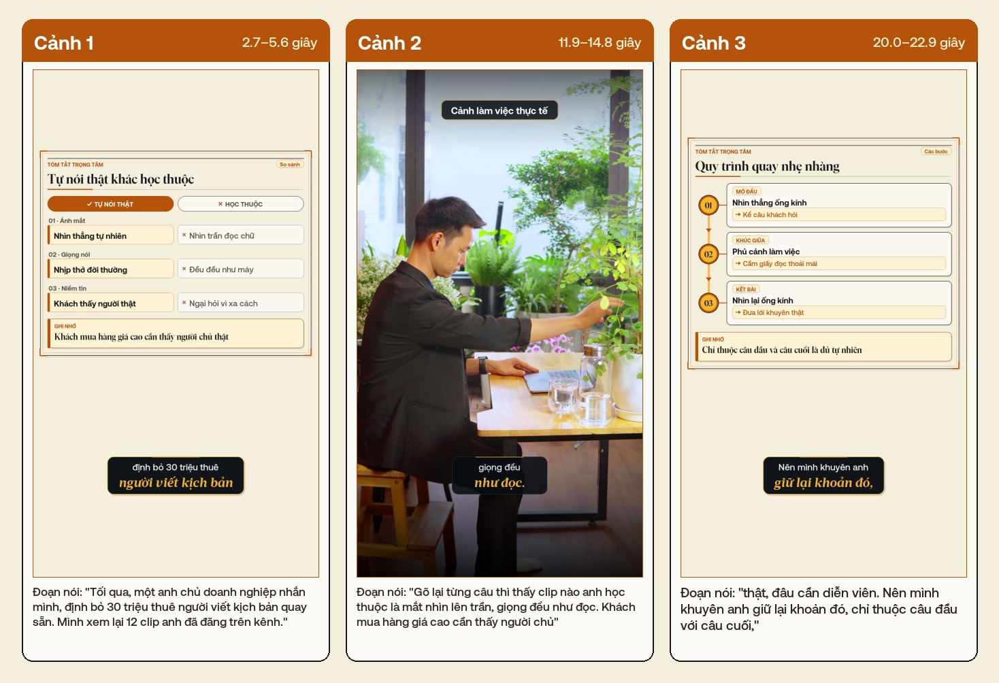

Hai Cách Gửi AI & Luồng Bot Nhiều Lượt
Phân vai rõ ràng cho hai video minh họa tại lớp: Cách 1 truyền trực tiếp vào máy tính để cả lớp cùng duyệt bảng thẻ vàng sau ~27 giây; Cách 2 gửi rời nhiều đợt qua Bot Telegram Lớp Riêng ngoài ban công rồi mở xem sau giờ nghỉ trưa.
1. Đối Chiếu Hai Đường Truyền Vào AI Trên Sân Khấu
Nếu chỉ dùng máy tính, học viên hay ngại cảm giác phải ngồi cặm cụi trước màn hình mới làm được video. Ngược lại, nếu chỉ gửi qua tin nhắn ngay từ đầu giờ sáng, cả lớp sẽ không thấy được bước quan trọng nhất của người làm chủ nội dung: liếc duyệt và chỉnh lại thẻ chữ trước khi xuất bản. Đặt hai cách ở hai thời điểm khác nhau giải quyết trọn vẹn cả hai nhu cầu đó:
| Tiêu chí | Cách 1 · Gửi trực tiếp vào MacBook (AirDrop) | Cách 2 · Gửi nhiều lượt qua Bot Telegram Lớp Riêng |
|---|---|---|
| Dùng cho kịch bản | Kịch bản #1 (quay lúc 09:00 ngay tại bàn chữ U). | Kịch bản #2 (quay lúc 11:55 ngoài ban công trước giờ ăn trưa). |
| Phụ thuộc mạng Wi-Fi | 0% CẦN MẠNG AirDrop truyền nội bộ giữa điện thoại và laptop trong 3–4 giây. | CẦN 4G / WI-FI Điện thoại đẩy clip nén lên máy chủ Telegram rồi máy tính trong phòng tự kéo về. |
| Điểm đắt để giảng bài | Chiếu Bảng duyệt thẻ vàng 3 cột lớn rõ trên máy chiếu; sửa trực tiếp 1 câu trên thẻ cho cả lớp xem. | Chứng minh sự rảnh tay: người nói đứng ngoài quầy cà phê gửi rời 2–3 đợt không cần gõ chữ chú thích từng file. |
| Cách xử lý thời gian chờ | Chỉ chờ ~27 giây tới bảng duyệt; phần kết xuất video (~2p17s) chạy ngầm lúc giảng bài. | Gửi xong đi ăn trưa; toàn bộ thời gian tải và kết xuất diễn ra trong giờ nghỉ, 13:30 mở xem ngay. |
2. Cách 1 · AirDrop Sang Máy Tính & Số Đo Thực Tế Tới Bảng Duyệt (~27 Giây)
Trên máy tính tại bàn giảng, luồng dựng video cho người làm nghề được tách làm hai nửa rõ rệt bằng một Điểm Dừng Duyệt Trực Quan. Số đo bấm giờ thực tế với đoạn nói 30 giây và bộ cảnh chèn như sau:
Ivory Gold) và điền nội dung vào các khuôn sơ đồ so sánh, lộ trình, cảnh làm việc.-14 LUFS và tự kiểm tra 18 tiêu chuẩn.
3. Cách 2 · Thiết Kế Bot Telegram Lớp Riêng Nhận Video Nhiều Lượt
Câu hỏi thực tế đặt ra là: “Khi đứng ngoài ban công gửi clip nói chính (A-Roll) rồi gửi tiếp từng đợt cảnh chèn (B-Roll) qua Telegram thì gửi vào Bot trợ lý sẵn có hay tạo một Bot mới chuyên dựng cho lớp?”. Kết quả rà soát luồng xử lý cho thấy bắt buộc phải tách một Bot Lớp Riêng vì ba nguyên nhân trực tiếp dưới đây.
3.1. Ba lý do không dùng chung Bot trợ lý cá nhân khi chiếu trước lớp
| Điểm nghẽn nếu dùng chung | Điều gì xảy ra trên màn chiếu lớp học? | Cách giải quyết bằng Bot Lớp Riêng |
|---|---|---|
| 1. Lẫn thông báo cá nhân | Bot cá nhân hàng ngày nhận chung báo cáo công việc, nhắc lịch và biến động giao dịch. Khi cắm điện thoại lên màn hình lớn rất dễ lộ tin nhắn riêng. | Tạo 1 Bot mới tinh dành riêng cho lớp học: khung trò chuyện sạch 100%, chỉ có clip quay tại Green Hub và video thành phẩm. |
| 2. Trượt bộ phân loại tự động | Bot tổng hợp đang chia nhiều nhánh việc: gửi video không gõ chữ sẽ bị hiểu nhầm là yêu cầu mổ xẻ phân tích video mẫu chứ không phải gom nguyên liệu để dựng. | Bot Lớp Riêng khóa cứng một nhiệm vụ duy nhất: 100% video gửi vào đều đưa thẳng vào giỏ nguyên liệu dựng phim. |
| 3. Tách lẻ từng lượt gửi | Ở chế độ chat thông thường, mỗi lần bấm gửi thêm 2–3 cảnh chèn sau 1 phút dễ bị mở thành một phiên việc mới, làm đứt liên kết với đoạn nói chính gửi trước đó. | Dùng cơ chế Giỏ Gom Theo Phiên: gửi 1 lần theo cụm hay gửi rải rác 4–5 lượt cách nhau vài phút đều dồn chung vào một giỏ. |
3.2. Cơ chế Giỏ Gom 3 Bước (Gửi nhiều lượt không cần gõ chú thích từng clip)
Để lúc đứng ngoài ban công thao tác tự nhiên nhất — không phải gõ dòng chữ “đây là cảnh chính”, “đây là cảnh phụ 1” cho từng video — Bot Lớp Riêng vận hành theo quy tắc tự đo thời lượng:
- Bước 1 — Mở giỏ mới bằng 1 chạm (
/moi): Trước khi gửi bài mới, bấm lệnh/moiđể làm sạch giỏ cũ và mở một ngăn chứa tạm cho bài quay hiện tại. - Bước 2 — Thả video thoải mái nhiều lượt: Gửi đoạn nói chính trước rồi vừa đi dạo quanh ban công vừa quay thêm cảnh nhấp cà phê, cảnh quầy gỗ gửi nối vào sau (gửi lẻ từng clip hoặc chọn chùm 3–4 clip đều nhận đủ).
- Bước 3 — Tự nhận diện bằng độ dài & bấm nút
[Duyệt & Dựng]: Mỗi khi có clip mới rơi vào giỏ, Bot tự đọc độ dài từng file và cập nhật trên một thẻ kiểm đếm duy nhất:- Clip có thời lượng dài nhất (~25–35 giây) tự động nhận vai Lời nói chính (A-Roll).
- Tất cả các clip ngắn 4–6 giây còn lại tự động xếp vào nhóm Cảnh chèn làm việc (B-Roll).
- Khi đếm đủ số lượng (ví dụ:
1 lời nói + 4 cảnh chèn), chỉ cần chạm nút [Duyệt & Dựng] ngay dưới thẻ đếm rồi cất máy đi ăn trưa.
3.3. Quy tắc gửi dạng “Video thường” để không chạm trần tải tệp 20MB
4. Bốn Khuôn Sơ Đồ Vàng-Kem Dùng Cho Video Ngắn 30 Giây
Để video 30 giây nhìn có chiều sâu tư duy mà không bị rối mắt như nhồi nhét bảng biểu dày đặc, hệ thống chỉ mở đúng 4 khuôn sơ đồ có cấu trúc chữ cực thoáng (tối đa 1–2 tấm sơ đồ trong mỗi bài nói 30 giây, xen kẽ với cảnh quay thật tại lớp):
compare_sheet): Đặt cạnh nhau cách làm cũ tốn sức và cách làm mới gọn nhẹ (dùng ở Câu 2 Kịch bản #1).roadmap_sheet): Dẫn mắt người xem qua thứ tự trước – sau rõ ràng như Đọc lời → Chia đoạn → Chèn cảnh (Câu 4 Kịch bản #1).anatomy_sheet): Tách bạch vai trò từng thành phần trong giỏ gom Lời nói · Cảnh chèn · Tự dựng (Câu 3 Kịch bản #2).checklist_sheet): Tóm tắt 3 gạch đầu dòng dễ nhớ ngay trước khi học viên bắt tay thực hành (Câu 2 Kịch bản #3).Lưu ý thiết kế: Khuôn biểu đồ tỷ lệ phần trăm (proportion_sheet) chủ động được gác lại trong buổi mở màn vì khuôn đó đòi hỏi trong cùng một câu nói phải xuất hiện ít nhất hai con số phần trăm. Với bài nói tự nhiên 30 giây, bốn khuôn chữ ở trên lên hình sạch, rõ và dễ đọc trên điện thoại hơn rất nhiều.
5. Ba Chốt Bảo Hiểm Để Buổi Diễn Thực Tế Không Bao Giờ Đứt Mạch
- Chốt 1 — Âm thanh phòng đông người: Trước khi bấm quay trực tiếp Kịch bản #1 lúc 09:00, mời cả khán phòng giữ yên lặng 30 giây và đặt điện thoại cách miệng 30–40cm (hoặc cài mic thu âm nhỏ). Nếu lần bấm máy đầu tiên vô tình dính tạp âm lớn làm chữ chép sai nhiều, quay lại tối đa 1 lần nữa hoặc mở bản quay thử lúc 07:45 sáng để giữ nhịp bài giảng.
- Chốt 2 — Nghẽn mạng di động tại hội trường: Cách 1 (AirDrop + dựng trên máy tính) chạy hoàn toàn ngoại tuyến nên luôn thành công 100% bất chấp Wi-Fi mạnh hay yếu. Với Cách 2 (Telegram), nếu sóng 4G khu vực ban công yếu bất thường, chuyển sang mở đoạn ghi màn hình thao tác gửi nhiều lượt đã thu sẵn để học viên vẫn nắm trọn luồng.
- Chốt 3 — Nối mượt từ màn trình diễn của người dạy sang tay học viên: Ngay sau khi lớp xem xong cách máy tự phủ cảnh làm việc vào khúc giữa bài nói, chuyển sang Chặng 03: Bài thực hành quay 30 giây đầu tiên để 100% học viên tự ra được video đầu tay ngay trong buổi sáng.